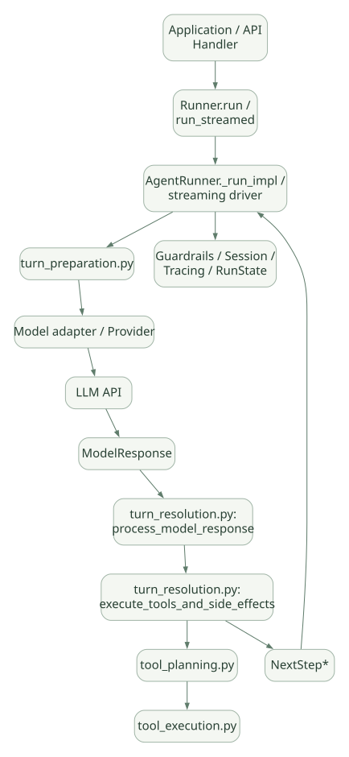

SECOND STUDY / SDK와 실행 구조
SDK와 실행 구조
이번 단원의 읽는 관점
구성 객체와 실행 엔진의 수명을 나누고 Runner 진입부터 단일 모델 Turn까지 따라갑니다.
살펴볼 경계새 실행과 재개, 자원 소유권과 정리를 확인하세요.
이 페이지의 세부 목차
Part I. Agent SDK를 실행 엔진으로 읽는 방법
1. 1분 요약: SDK가 실제로 책임지는 일#
OpenAI Agents SDK는 Python 프로그램 안에서 동작하는 에이전트 실행 라이브러리/SDK다. Agent 정의, 실행 루프, 로컬 함수 호출, Handoff, Guardrail 실행, 결과·상태 표현과 Tracing을 제공한다. 사용자는 별도 서버 앱, 데이터 저장소, 외부 시스템 권한, 조직별 정책을 설계할 수 있고 필요에 따라 구현해야 한다. [DOC: D01, D02]
Responses API는 원격 모델에 요청하는 API이며, SDK는 그 API 및 호환 모델 인터페이스 위에서 여러 차례의 의사결정과 도구 실행을 조직하는 런타임이다. 이것이 가장 중요한 역할 구분이다.
| 구성 요소 | 누가 실행하는가? | 무엇을 담당하는가? |
|---|---|---|
| Python 애플리케이션 | 개발자 서버/프로세스 | 인증, 업무 API, 사용자별 권한, 배포, 크론, 큐, DB |
Agent |
SDK 내 설정 객체 | 모델, 지시문, 도구, Handoff, 출력 계약 |
Runner |
SDK Python 코드 | 모델 재호출, 단계별 결과 처리, Loop, 중단·완료 판단 |
Model 구현 |
SDK 어댑터 | 원격 LLM의 요청·응답 타입을 SDK 인터페이스로 변환 |
| 실제 LLM | 외부/자체 모델 서비스 | 다음 텍스트, Tool Call, Handoff Call 등을 생성 |
FunctionTool |
SDK 래퍼 + 사용자 함수 | 스키마/검증/Hook/실제 코드 실행 |
| Session 저장소 | SDK 내장 또는 사용자 구현 | 다음 애플리케이션 Turn에서 사용할 이력 관리 |
| 승인 시스템 | SDK 상태 + 외부 사람/정책 | Tool 실행 전 멈춤/승인/거절/재개 |
SDK는 웹 서버가 아니다. Runner.run(...)을 FastAPI나 워커에서 호출해야 HTTP 서비스가 된다. SDK가 LLM 서버(vLLM/SGLang)인 것도 아니다. 로컬 모델을 외부의 OpenAI 호환 서버로 서빙해 SDK와 연결할 수 있으나, 호환 API 제공 여부에 따라 기능이 달라진다.
2. 한 번의 사용자 요청과 한 번의 모델 호출은 다르다#
- 사용자 요청: 앱이
Runner.run(...)을 호출한 업무 단위. - 모델 Turn: SDK가 특정 Agent의 모델을 호출하고 결과를 처리하는 반복 단위.
- Tool Call: 모델 출력 안의 호출 요청 하나. 모델 Turn 하나에 여러 개가 생길 수 있다.
- Run: Loop가 최종 완료되거나 승인 대기 등 중단 지점에 도달하는 SDK 실행.
- Session: Run 간에 유지하는 대화 이력의 논리 식별자 및 저장 인터페이스.
- Subagent as Tool: 부모가 자식 Agent를 호출하고 자식 Run 결과를 Tool 출력으로 받는 중첩 실행.
- Handoff: 같은 Run 안에서 현재 Agent의 제어권을 다른 Agent로 넘김.
| 순서 | 보내는 쪽 → 받는 쪽 | 호출 내용·조건 |
|---|---|---|
| 1 | Application → Runner | run(agent, user_input) |
| 2 | Runner → Model | 요청 #1 |
| 3 | Model ⇢ Runner | Tool Call A, Tool Call B |
| par 도구 실행 (정책·구현에 따라) | ||
| 4 | Runner → Tool | A |
| 5 | Tool ⇢ Runner | A result |
| ↳ and | ||
| 6 | Runner → Tool | B |
| 7 | Tool ⇢ Runner | B result |
| end | ||
| 8 | Runner → Model | 요청 #2 (Tool 결과 포함) |
| 9 | Model ⇢ Runner | Final output |
| 10 | Runner ⇢ Application | RunResult |
원문의 학습용 도식입니다. 호출 방향과 반복·분기·참고를 순서표로 보존했습니다. 실선 →와 점선 ⇢를 구분합니다. 실제 구현·의사코드·해석의 구분은 본문을 함께 읽으세요.
도식 원문 보기 (Mermaid)
sequenceDiagram
participant U as Application
participant R as Runner
participant M as Model
participant T as Tool
U->>R: run(agent, user_input)
R->>M: 요청 #1
M-->>R: Tool Call A, Tool Call B
par 도구 실행 (정책·구현에 따라)
R->>T: A
T-->>R: A result
and
R->>T: B
T-->>R: B result
end
R->>M: 요청 #2 (Tool 결과 포함)
M-->>R: Final output
R-->>U: RunResult발표 포인트: 한 번의 Runner.run은 한 번의 LLM 요청과 동의어가 아니다. SDK가 실제로 반복하는 단위와 완료 조건을 코드로 확인하는 것이 Agent 프레임워크 분석의 출발점이다.
3. Agent는 상태를 가진 실행 프로세스인가?#
기본적으로 Agent는 이름, 모델 선택, 지시문, 도구, Handoff, 출력 형식을 담는 구성 객체로 이해하는 것이 정확하다. 대화 이력이나 모델 입력 전체가 항상 Agent 객체 안에 저장되는 것은 아니다. RunContextWrapper, Session, RunState는 서로 다른 목적의 상태다.
일부 도구·설정·콜백은 Agent 객체에 연결되므로 재사용 시 동시성 및 가변 객체의 공유 위험을 별도로 검토해야 한다. 같은 Agent 객체를 여러 사용자에게 재사용한다고 해서 자동으로 사용자별 데이터 격리가 보장되는 것은 아니다. [INF]
Agent.as_tool()은 별도 실행을 하는 자식 Agent를 Tool처럼 노출한다. handoffs는 현재 Agent 소유권 전환이다. 두 방식을 multi-agent라는 하나의 단어로 뭉뚱그리지 않는다. [DOC: D06, D07]
4. v0.24.0 고정과 버전 차이#
v0.24.0릴리스 커밋:17d994bd3045dae71acda676a4ef4762ed8ecd94(공식 GitHub 릴리스·PyPI 출처).- 핵심 변경: MCP annotation 노출, Run 전체 Tool 오류 포맷터 지원, OpenAI Conversations Session 저장 쓰기 분할, 승인 대기 중 자동 압축 보류 등. [DOC: D00]
- 이 문서의 모든 파일 경로는
https://github.com/openai/openai-agents-python/blob/v0.24.0/접두사에 상대 경로를 붙여 찾는다. - Python SDK를 기준으로 하며 TypeScript SDK의 실행 내부와 동일하다고 주장하지 않는다.
버전 고정 이유: Runner의 함수 분할, Tool 분기, Session 저장 및 Sandbox 기능은 릴리스별로 크게 달라질 수 있다. main에서 읽은 코드를 v0.24.0의 구현 사실로 가져오면 안 된다.
Part II. 실행 구조와 실제 호출 경로
5. 실제 패키지 아키텍처#
가로로 이동해서 읽을 수 있습니다. 도식 크게 보기 ↗

원문의 학습용 도식입니다. 연결 방향·분기 조건·점선·쌍방향 연결을 보존해 세로로 배치했습니다. 실제 구현·의사코드·해석의 구분은 본문을 함께 읽으세요.
도식 원문 보기 (Mermaid)
flowchart TD
A[Application / API Handler] --> B[Runner.run / run_streamed]
B --> C[AgentRunner._run_impl / streaming driver]
C --> D[turn_preparation.py]
D --> E[Model adapter / Provider]
E --> F[LLM API]
F --> G[ModelResponse]
G --> H[turn_resolution.py: process_model_response]
H --> I[turn_resolution.py: execute_tools_and_side_effects]
I --> J[tool_planning.py]
J --> K[tool_execution.py]
I --> L[NextStep*]
L --> C
C --> N[Guardrails / Session / Tracing / RunState]| 영역 | 고정 소스 경로 | 의미 |
|---|---|---|
| 공개 Runner 인터페이스 | src/agents/run.py |
Runner, AgentRunner, _run_impl, RunResult 처리 |
| Loop 실행 유틸 | src/agents/run_internal/run_loop.py |
단일 Turn, Stream, 모델 호출·도구 실행 지원 함수 |
| 준비 | src/agents/run_internal/turn_preparation.py |
모델·도구·Handoff·출력 스키마 준비 |
| 모델 응답 분류·정리 | src/agents/run_internal/turn_resolution.py |
process_model_response, NextStep 결정, Final/Handoff |
| 내부 결과 모델 | src/agents/run_internal/run_steps.py |
ProcessedResponse, SingleStepResult, NextStep* |
| Tool 실행 계획 | src/agents/run_internal/tool_planning.py |
신규·재개 실행의 도구 계획 및 승인 처리 |
| Function/로컬 Tool 실행 | src/agents/run_internal/tool_execution.py |
검증, 승인 검사, 비동기 실행, 실패 정리 |
| Guardrail | src/agents/run_internal/guardrails.py |
입력·출력 Guardrail 실행 |
| Session 저장 | src/agents/run_internal/session_persistence.py |
읽기/쓰기/중단/Compaction 연동 |
| 일시중단 상태 | src/agents/run_state.py |
중단된 Run의 상태 및 직렬화 |
[SRC] 위 파일들의 존재와 주요 내보내기(import 및 __all__)는 v0.24.0 고정 파일에서 확인된다. 파일명만 보고 함수를 짐작하지 않는다. 한 기능이 여러 모듈로 분리되어 있으므로 실제 호출자부터 역추적한다. [S01~S10]